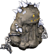
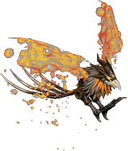

帕爾塞斯
庫修隆
盧米納
莉希涅
斯坎達倫
歐費爾
戴莫尼翁
天橋｜入口｜1樓大廳｜2樓監獄｜3樓監獄｜4樓監獄｜5樓監獄｜5樓監獄(首領區)｜6樓監獄
獎勵1｜獎勵2｜獎勵3
BOSS怪物：提阿朱
※限制時間50分
出現怪物
| 鋼鐵狂戰士 | Lv | AC | MC | AAR | SAR | 掉落物品 |
| HP:8萬 | 120 | -42 | 45 | 5 | 4 | 格亨納寶珠(小)、格亨納信仰寶珠(小)、盧米納帽(@6)、魔力恢復液1、流星、聖血 |
| 善惡值 | 信仰值 | 金錢 | 攻擊屬性 | 防禦屬性 | ||
| 292 | 292 | 1250~1300? | 隨機 | 隨機 | ||
| STR | DEX | INT | WIS | CON | ||
| 200 | 70 | 80 | 60 | 70 |
備註

泥人| 泥人 | Lv | AC | MC | AAR | SAR | 掉落物品 |
| HP:18萬 | 120 | -5 | 49 | 5 | 24 | 格亨納寶珠(小)、格亨納信仰寶珠(小)、盧米納米雷納(@6)、盧米納帽(@6)、盧米納賈格寶珠、流星、柯斯莫技能之水、泥塊 |
| 善惡值 | 信仰值 | 金錢 | 攻擊屬性 | 防禦屬性 | ||
| 299 | 299 | 1350~1400? | 隨機 | 隨機 | ||
| STR | DEX | INT | WIS | CON | ||
| 200 | 70 | 160 | 60 | 70 |
備註

廢墟鳳凰| 廢墟鳳凰 | Lv | AC | MC | AAR | SAR | 掉落物品 |
| HP:24萬 | 120 | 15 | 47 | 5 | 15 | 格亨納寶珠(中)、格亨納信仰寶珠(中)、魔力恢復液2、柯斯莫強力技能之水 |
| 善惡值 | 信仰值 | 金錢 | 攻擊屬性 | 防禦屬性 | ||
| 544 | 544 | 2250～2350? | 隨機 | 隨機 | ||
| STR | DEX | INT | WIS | CON | ||
| 200 | 70 | 160 | 60 | 70 |
備註
| 緹亞潔 | Lv | AC | MC | AAR | SAR |
| HP:2068萬 | 120 | 0 | 10 | 70 | 15 |
| 善惡值 | 信仰值 | 金錢 | 攻擊屬性 | 防禦屬性 | |
| 20400 | 20400 | 800,000 | 隨機 | 隨機 | |
| STR | DEX | INT | WIS | CON | |
| 200 | 130 | 160 | 200 | 140 |
備註 怠惰之枷(遠距離) 保護之膜(不明)
掉落物品
格亨納寶珠(大)、格亨納信仰寶珠(大)、格亨納結晶、[3次]各種防具4階段升級捲軸(服・護膝)、[3次]各種防具5階段升級捲軸(頭盔・服・護膝・耳環・戒指)、阿納西斯、盧米納束腹(@1)、超級靈魂寶石、盧米納劍、盧米納斧、盧米納指虎、盧米納短劍、盧米納杖、盧米納寶珠、盧米納雙刃、盧米納牌組、盧米納槍、盧米納豎琴、盧米納庫萊克、盧米納頭盔、盧米納鋼盔、盧米納帽、盧米納米雷納、盧米納安加、盧米納盧西爾、盧米納蓋貝爾、盧米納哈維、盧米納巴羅茲、盧米納弗拉吉爾、盧米納羅格斯、盧米納加蘭茲、盧米納恩斯特、盧米納德拉克、盧米納奧爾蕾亞、盧米納里法因德、盧米納拉皮內斯、盧米納法扎德(以下為一段時期掉落、現在不會出的東西)@1段各種善3次武器、@2段各種善3次帽子、＠2段各種善3次服、克修倫帽、克修倫米雷納、克修倫阿德里娜、克修倫豎琴、克修倫短劍